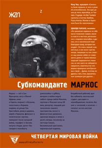

Субкоманданте Маркос • Четвертая Мировая война • Перевод: Олег Ясинский • жzл • 06.05.2005

Четвертая Мировая война — это война, которую ведет мировой неолиберализм с каждой страной, каждый народом, каждым человеком. И эта та война, на которой передовой отряд — в тылу врага: Сапатистская Армия Национального Освобождения, юго-восток Мексики, штат Чьяпас. На этой войне главное оружие — это не ружья и пушки, но борьба с болезнями и голодом, организация самоуправляющихся коммун и забота о чистоте отхожих мест, реальная поддержка мексиканского общества и мирового антиглобалистского движения. А еще — память о мертвых, стихи о любви, древние мифы и новые сказки. Субкоманданте Маркос, человек без прошлого, всегда в маске, скрывающей его лицо,— голос этой армии, поэт новой революции.
Пресса
Андрей Кротков. Субкоманданте как брэнд (Экслибрис НГ)
В не публиковавшейся у нас книге “Дороги беззакония” (1938) Грэм Грин с ужасом описывал события, вершившиеся в 1928-1932 гг. в мексиканских штатах Табаско и Чьяпас. Традиционная для Латинской Америки слабость центральных правительств в сочетании с региональным каудильизмом (правлением местных олигархов) привела к тому, что на территории Табаско и Чьяпаса возникли тогда независимые от центра либерально-антиклерикальные режимы. Их сторонники разрушали церкви, истребляли священнослужителей, творили аграрную справедливость, насаждали образование и устанавливали прогресс. Иначе говоря, под дулами винтовок волокли народ к счастью. Неудивительно, что стихийное народное сопротивление антиклерикалам оказывали темные массы индейцев под руководством уцелевших попов и латифундистов – так называемые cristeros, христовцы. Прозвище они получили по боевому кличу “Viva Cristo Rey!” – “Да здравствует Христос Царь!”
Франсиско (Панчо) Вилья, Эмилиано Сапата, Аугусто Сесар Сандино, Луис Карлос Престес, Эрнесто Че Гевара, Даниэль Ортега… Список практических революционеров длинен. А если к нему прибавить “революционеров в погонах” (генералов-президентов Омара Торрихоса, Мануэля Норьегу, Уго Чавеса), перуанских комбатантов движения “Сендеро Луминосо” и колумбийских наркобаронов с антиимпериалистическим уклоном типа Пабло Эскобара, то в евромозгах шарики окончательно заходят за ролики. Понять, кто есть кто и что есть что, почти невозможно.
Мексиканский политический вулкан не угас и по сей день. Осенью 1984 г. в штате Чьяпас миру явился субкоманданте Маркос. Человек, о котором уже два десятилетия напряженно толкуют все революционисты Старого и Нового Света. Перед нами объемистый том сочинений самого субкоманданте. Понятие “антиглобализм” он манифестирует едва ли не на каждой странице. Если глобализм – удобная короткая замена термина “мировая экспансия либерального капитализма”, то антиглобализм означает нечто противоположное, то есть движение отторжения глобализма. А поскольку чистое отрицание неплодотворно и нуждается в утверждении, то антиглобализм предположительно должен иметь позитивную программу.
Ни марксистско-социалистические проекты разных модификаций, ни господствующие во всех странах Латинской Америки (кроме Кубы) капиталистическая экономика и представительная демократия не принесли стабильности и процветания. Разумеется, либеральная экономика и свободно-демократический правопорядок не панацея, как и марксистско-социалистические и национально-социалистические эксперименты. При таком раскладе сил антиглобализм не может служить альтернативой глобализму как естественному проявлению капиталистической системы.
Разве антиглобализм – это замаскированный коммунизм? Ничего подобного. Что же тогда? Ведь альтернатива – одно из двух, “третьей альтернативы” не бывает. Следовательно, антиглобализм – это наш старый знакомый “третий путь”, нечто среднеидеальное, лежащее промеж капитализма и коммунизма, обладающее достоинствами обоих и лишенное их недостатков.
Независимо от того, реален или виртуален субкоманданте Маркос (в книге даже названо его имя – Рафаэль Себастьян Гильен Висенте, год рождения 1956-й, метис из Тампико, выпускник философского факультета и бывший университетский преподаватель), его личность, моделируемая по текстам, вызывает симпатию несходством прокламируемых им принципов с привычными декларациями вооруженных латиноамериканских герильерос: “Мы сформировались внутри армии, Сапатистской Армии Национального Освобождения. Это военная структура… Но в любом случае наша армия – это армия совершенно другая, потому что мы стремимся как раз к тому, чтобы перестать быть армией. Военный – это абсурдная личность, потому что он должен прибегать к оружию, чтобы убедить другого в том, что его истина – единственная, которой нужно следовать. В этом смысле если будущее нашего движения – военное, то у него нет будущего. Если САНО продолжит свое существование как вооруженная военная сила, это станет ее поражением. Поражением в смысле поражения ее идейных позиций, ее взгляда на мир. И кроме этого и еще худшим, чем это стало бы, если бы САНО пришла к власти и начала править как революционная армия. Для нас это было бы поражением”.
Вооруженная сила, не стремящаяся воевать? Региональное повстанческое движение, не стремящееся к абсолютному контролю над базовой территорией? Вооруженная оппозиция правительству (в частности) и государственной идеологии (в целом), постоянно стремящаяся к мирному позитивному переговорному процессу? Что ж, такое действительно трудно понять. Но это существует и требует понимания.
О жизни сапатистских общин Чьяпаса известно лишь, что в них категорически запрещено употреблять алкоголь и наркотики, а члены общин отличаются немногословностью, непривычной на фоне неумеренной говорливости латиноамериканских левых.
Постулируя глобализм как “четвертую мировую войну”, субкоманданте (если опираться исключительно на входящие в книгу тексты, особенно “Семь деталей мировой головоломки”, “Интервью Г.Г. Маркесу” и “Мир: семь размышлений в мае 2003 года”) не развивает сколько-нибудь конструктивных собственных идей. В его высказываниях отчетливо видно разочарование в марксистском (троцкистском, маоистском) революционизме. Высказывания о Кубе и Кастро полностью укладываются в шаблон мексикано-кубинских отношений (дружба домами без поддержки внутренних оппозиционных сил, опирающаяся на раздражающее соседство США). Слабо просматриваются лишь смутные контуры сапатистской модели, пресловутой “третьей альтернативы” капитализму и коммунизму: естественный уклад жизни в индейских общинах. Это ожидаемо. САНО – движение, опирающееся на индейцев, а слово “индихенсиа” (нужда) не только созвучно названию коренного населения, но и точно описывает его социальное положение.
Старик Антонио, индеец племени цоциль, постоянный персонаж текстов субкоманданте, несколько настораживает. Уж слишком хорошо знаком нам образ умудренного опытом носителя некой традиционной культуры, после обращения к которому питомец прогнившей западной цивилизации прозрел и духовно переродился. Вряд ли случайно тексты субкоманданте, в которых появляется этот старик, по стилю не сходны с политическими документами и скорее напоминают прозу в духе Кастанеды. Персонажа, неслучайного в пантеоне субкоманданте.
Похоже, что перед нами очередная популистская утопия, своеобразная индеанизированная реинкарнация стихийного протестного движения, охватившего молодежь Запада в 1960-е годы, ярчайшими выразителями которого стали хиппи. Как известно, движение хиппи пыталось набрать созидательный потенциал, но не пошло дальше создания примитивных бытовых коммун, быстро погрязших в наркотиках и “свободной любви”. После чего хиппизм был успешно переварен западным истеблишментом и превратился в популярный, хорошо продаваемый брэнд.
Брэндом, правда, в ином, немного постмодернистском стиле, стал и Маркос с его черной маской на лице, бесконечными письмами к мировому сообществу и томиком Сервантеса в походной сумке.
Разумеется, САНО – не хиппи. Хотя бы потому, что движение вооружено, структурировано, имеет социальную базу, программу и определенный авторитет. Утопизм субкоманданте неагрессивный и гуманистичный. Но в условиях латиноамериканской “континентальной альтернативности”, при сложившейся репутации Латинской Америки как “передового отряда третьего мира”, при начавшемся движении в сторону создания латиноамериканского сообщества типа ЕЭС – будущее САНО и субкоманданте Маркоса представляется весьма проблематичным. Континент в целом выбрал свою судьбу, и “третьей альтернативе” в ней места нет. Доказательство – необычно длительный, более 20 лет, период “сивилизации” (гражданского правления), наступивший после эпохи “пронунсиаменто” (военных переворотов и военных режимов) 1960-1970-х.
Мирно-вооруженному проекту САНО угрожает самая банальная опасность – рутинизация. Однако уже двадцать лет сапатисты, не требующие ни местного самоуправления, ни отделения от Мексики, сидят в джунглях воплощенным укором правящим режимам. И сколько еще просидят – неизвестно.
http://exlibris.ng.ru/koncep/2005-09-01/5_subkomandante.html
Алексей Цветков. Волшебные жуки и непостижимые старики (Русский журнал)
Мне часто говорят в разных модных местах о нем: “Ну, это просто был такой пиар к тамошним выборам президента”, или “Куда-то испарились эти партизаны, они существовали вообще?”, или “А сколько ты срубил на их промоушне?”. Говорит московский средний класс, приученный к легкомысленной пелевинщине и уверенный, что всякая активность кем-то заказана, а любой успех – следствие грамотного пиара. В их мире если ты талантлив, то куплен, а если не куплен, значит не нужен никому. Сказав, ждут, что я начну сыпать доказательствами обратного, а у них будет шанс иронично покивать. Они слышали о сапатизме и поздравляют с этим друг друга. “Запрещенных людей” противопоставляют “повседневной жизни”. Обычно я меняю тему разговора, потому что, признаюсь, мне не важно, существует ли субкоманданте Маркос в так называемой реальности, мне не очень важно даже, существует ли штат Чьяпас и сама Мексика. Мне важно в данном случае лишь одно: что там написано, в его книгах, и важно ли для нас это. Написано интересным русским языком, с массой поясняющих контекст сносок, за что отдельное спасибо переводчику Олегу Ясинскому, легендарному человеку, много лет живущему в Чили, исколесившему весь континент и видевшему этот самый сапатизм своими глазами. В идеале чтение рецензии должно заменять чтение самой книги, поэтому я пущусь в творческий пересказ. С первых же недель герильи благодаря интернету росла ни столько политическая, сколько литературная слава субкоманданте. Непостижимый и нуждающийся в оружии народ говорит с ним о ночном сотворении мира языком “старца Антонио”, а неистовый пафос и пророческий дар предписан другому соратнику – жучку Дурито в плетеных индейских сандалиях на всех руках и ногах, насекомому повстанцу, меняющему внешность и пускающему в ход колдовство там, где буксует рационализм. Шум спускающихся с гор ручьев – это шум индейской крови, сливающейся в общий поток священной войны. Партизанские дети воплощают непосредственность и беззащитность. Павшие индианки символизируют женскую ипостась земли. Крот – самый смелый зверь, потому что не видит по слепоте, кому вцепился в морду, а боги творят одних людей из клубней, а других из золота, обрекая их тем самым на гражданскую войну.
Большинство известных мне “противников капитализма” переживают свою альтернативу на уровне эмоций, иногда на уровне образов и исторических аналогий и почти никогда – в виде актуальных моделей. Поэтому сапатистская смесь Че Гевары с Кастанедой подходит им идеально. Первый сборник Маркоса по-английски издан, кстати, в 98-м фондом Джона Леннона.
Грезы и экзотика, впрочем, ненадежное оружие, и, конечно же, за метафорами имеется идеология. Вот она.
Когда обнажается иллюзия перемен, дальнейшая перемена иллюзий перестает устраивать. С этого начинается герилья. Все, что происходит в мире, отныне происходит именно с тобой. Новое есть преодоление, а не переодевание. Новое наступает там, где заканчивается Обмен и начинается Дар. Отсутствие воображения у левых провалило их мировой проект. Им не хватило радости, чтобы продолжить революцию. Отчаяние и капитулянтский “политический реализм” стали их уделом. Они забыли, что восстание и праздник – это синонимы, а политэкономия слепа без поэзии. Герилья эпохи постмодерна нуждается в самоиронии, оттого субкоманданте в своих сочинениях, как и полагается на бахтинском карнавале, столько какает, пукает и даже пьет мочу. Герилья – способ покинуть мир, в котором ты, как и другие, есть просто предмет. Герилья отрицает принцип полезного страдания и добровольного самопожертвования, т.к. именно на них держится любая иерархия. Герилья – способ прикоснуться к истории и выбрать себе прошлое, позвать к себе самого себя. Герилья есть создание общества, в котором отсутствует невыносимая бессмысленность бытия. Герилья вербует тех, кого смерть пугает меньше, чем отсутствие реальной жизни. Есть сто способов поддерживать иерархию. Герилья – единственный способ отменить/преодолеть ее. Герилья идет везде. Она – шанс сделать так, чтобы конец неолиберализма не стал концом человечества.
Маркос дает достаточно оснований для споров о христианских не то марксистских мотивах его герильи. Считая посредственность главной болезнью современности, он говорит так, чтобы давать основания для всего на свете.
Кто есть субкоманданте Маркос? Еще один талантливый мечтатель, считающий, что все стоит на голове и пора с этим покончить? Почему именно ему так часто прощают пафос фраз вроде “За вами находимся мы!” или “Мы снимем маски, когда вы их снимете!”? Знающие говорят, что нельзя привлечь внимание к тексту, не дав захватывающей биографии автора.
Претендуя на роль лидера или просто “посредника”, но не вождя, субкоманданте скрывает лицо под маской и как можно чаще пишет “мы”, а не “я”. Герилья не принадлежит никому в отдельности, но всем заметно, что “попытка обойтись без вождя дала первого в истории вождя с закрытым лицом”.
Десять лет назад, в новогоднюю ночь 94-го, сапатисты захватили столицу мексиканского штата Чьяпас. Кроме обвинений в адрес местных “марионеточных” властей, разоблачений коварных планов США и проклятий транснациональным олигархам, “покупающим и продающим землю под нашими подошвами и воздух в наших легких”, незнакомец в маске читал стихи, свои и Шекспира, пересыпал речь непереводимыми индейскими поговорками и противопоставлял Белый дом фантастическим животным древних индейских сказок. Весь его облик, движения, слова, звучавшие сквозь дым постоянно тлеющей трубки, выражали чистую партизанскую харизму, лишенную личных черт, но мобилизующую поклонников. Весь он был увешан “сакрализаторами”: фонарик на шее средь бела дня подчеркивал “подпольное”, т.е. андерграундное происхождение, пятиконечные звезды на фуражке соединяли борьбу с традицией партизан прошлого, костяные бусы и амулеты говорили о народности, сотовый телефон и ноутбук придавали продвинутости.
– Мы приделали курок к вашей мечте, – говорили партизаны индейцам и журналистам. Журналисты, не ожидавшие такой новогодней ночи, рассылали по редакциям факсы о новом “полевом командире”, бросившем вызов конституционному строю и государственной безопасности. Самая частая фраза первых репортажей из Чьяпаса: “Они взялись из ниоткуда”. О новом сапатизме до этого дня не подозревала ни одна спецслужба, ни одна редакция, ни один политик.
Сан-Кристобаль покрывался уличными фресками: серп, скрещенный с кукурузой, черная маска в красной звезде, веселый скелет в сомбреро и с “калашником”, пулеметные ленты, где между патронами слова лозунгов, иконоподобные лики обнявшихся Сапаты, Че Гевары и Маркоса. Субкоманданте фотографировался на их фоне, посмеиваясь отвечал, что он вообще-то против культа своей личности и нарисовал бы по-другому, но все же такие стены лучше, чем “обыкновенная каменная глухота”.
Понятия “антиглобализм” еще не было, но аналитики его вскоре выдумают, вникая в новые манифесты и стихи Маркоса. Как признается на обложке новой книги модный музыкант Ману Чао, антиглобализм пришел к нему, европейцу, именно из Чьяпаса.
Настоящий триумф Маркос пережил в апреле 2001-го, когда задумал и осуществил мирный марш на столицу – Мехико. Согласно опросам, его рейтинг тогда сильно превышал популярность мексиканского президента. К этому моменту мексиканские власти, напоровшиеся на старую истину: нельзя выиграть партизанскую войну, если ее поддерживают местные жители, – воевали с Маркосом уже не как пять лет назад, а больше для порядку. Пока в Мехико решали, как реагировать на мирный марш, Маркос приближался, обрастая толпами восхищенных крестьян, экзальтированных студентов, деклассированных весельчаков и своей мигом собравшейся международной свитой, вполне тянувшей на полный преподавательский состав престижного университета или редакцию культового журнала. В довершение всего встречать Маркоса в Мехико приехал Габриэль Гарсия Маркес. Перед выступлением субкоманданте согласился отыграть концерт Ману Чао. И тут стало окончательно ясно, что брать его под стражу или тем более устраивать на его пути стрельбу – непозволительная роскошь для загнанных в лузу властей. Тем более что та же маска в Чьяпасе завтра же может надеться на любую другую, доселе незнакомую голову. Сколько у них там заготовлено запасных игроков?
Со временем Маркос разговорился о себе, и версию, будто под маской скрывается целая компания похожих друг на друга братьев-знахарей, которым запрещено открывать чужакам лица, уже никто не принимает всерьез. Субкоманданте – метис, учился в университете Мехико на философском, увлекался Сартром, вообще экзистенциалистской школой, потом подпал под обаяние Маркса, хотел ехать в соседнюю Гватемалу, где бушевала революция, или в Никарагуа, где победили тогда партизаны-сандинисты, но вместо этого ушел в чьяпасские горы. Индейцы повлияли на него сильнее, чем он на них. За десять лет жизни в сельве все активисты студенческого кружка либо сбежали назад в “большую жизнь”, либо погибли. Одним из похороненных в лесу и был настоящий Маркос, у которого занял имя тот Маркос, о котором вы читаете. Имя или всю остальную жизнь тоже? И чью биографию я тогда здесь рассказываю: живого или мертвого партизана? Связное повествование начинает двоиться, а идентичность маски опять мерцает на радость всем любителям неопределенности.
Приступ немедленной инстинктивной солидарности пережили тогда, в 94-м, многие. Европейские теоретики и левая богема впились в образ нового партизана, как вампиры, изголодавшиеся по живой крови. Из французских философов Режи Дебре, Пьер Бурдье плюс редактор “Монд дипломатик” Игнасио Рамоне торжественно записались в личные друзья. Чуть позже то же случилось с вдовой президента Миттерана и нобелевским лауреатом Хосе Сарамаго. Том Морело из “Антимашинной ненависти”, прибавив Маркоса к прежним своим кумирам Пелтиеру и Мумие Абу Джамалу, рубился за него на концертах так, что эти концерты прекращала полиция. Оливер Стоун с камерой на плече карабкался по партизанским тропкам, чтобы добраться до деревни сапатистов, устроенной в горах специально для приема гостей. Писатель Эдуардо Галеано фотографировался с Маркосом и поддерживал чем мог. Вообще-то такой PR не купишь ни за какие шиши, но субкоманданте и его братья по оружию платят своим друзьям иной, более мощной валютой – новой надеждой на то, что капитализм не заканчивает человеческую историю, хрупкая уникальность может обыграть жесткий стандарт, романтику есть что ответить прагматику и вообще не всякая экзотика продается.
С сапатистской герильи и кроме антиглобализма много чего началось. Воодушевленные манерами и успехом Маркоса левые стали брать в Латинской Америке страну за страной, где законно, как Партия труда в Бразилии или Чавес в Венесуэле, а где и не очень, вплоть до революции в Аргентине и недавнего восстания в Боливии. Сапатизм разошелся на пропагандистские цитаты. Теперь весь этот “красный пояс”, назвавшийся боливарийской революцией, имеет даже свой спутниковый телеканал “Телесур”, направленный против “культурного империализма” и официально глушимый США. Одним из руководителей такого телевидения стал Тарик Али, политический аналитик и, конечно же, “брат сапатистов”.
Благодаря всему этому Маркос сделался моден до неприличия. Его образ, не спрашивая, используют в рекламе мебели и презервативов. Недружественная пресса пытается пришить ему “красное прошлое”, т.е. ищет в нем старый добрый большевизм, на что он отвечает остроумной сказкой про продавца старых газет, который разбогател на переработке бумаги и, став монополистом, заставил всех читать только газеты прошедшего века.
У нас с первой книжки Маркоса “Другая революция”, изданной “Гилеей” три года назад, тоже много чего началось. Залп рецензий, неадекватный скромному тиражу, от издевательских до заинтересованных, сначала обрадовал, а потом почти испугал. Субкоманданте называли “пижоном” и “мексиканским Басаевым”, а издательство обвиняли в “моральном дальтонизме”. Несколько гламурных журналов (и примкнувшая к ним газета “Завтра”) отдали под тексты Маркоса или под его биографии множество полос, будто речь шла о новой звезде рэпа. Единственного, кажется, в России адекватного марксистского аналитика Бориса Кагарлицкого уволили из “Новой газеты”, где он заведовал политикой, за слишком комплиментарную статью о книге. Газета “Большой город” заметила “новую молодежную моду на левизну”, а бдительное “Книжное обозрение” забило в колокол и объявило против “левизны книжной”, угрожающей обществу, крестовый поход, назвав спасением от этой чумы жанровость, т.е. акуниных, юзефовичей, донцовых и прочий комбикорм, узаконивающий нашу повседневность и даже делающий ее “желанной”.
Узнав из газет о новой книжной моде, издатели не замедлили среагировать. Вышла “Империя” Негри и Хардта, в которой сказано то же самое, но гораздо более путано и со злоупотреблением академической феней. Собственно, сапатизм в понимании Маркоса точно совпадает с их термином “множественность”, сменившим у левых интеллектуалов прежнюю “классовость”. Немедленно перевели No Logo Наоми Кляйн. “Ультра.Культура”, претендующая на роль русских “Лумпаникс”, “Автономедиа” и “Блэк роуз бук” в одном лице, выдала огромный двухтомник “левого радикализма” и воспоминания Хьюи Ньютона – вождя “Черных Пантер”. “Ад маргинем” запустил серию о Ленине (Альтюссер, Жижек, далее везде). Гилеевская серия “Час Ч” победно продолжилась колумбийскими партизанами и Кристофом Агютоном. Дело дошло даже до Каллиникоса с его “Антикапиталистическим манифестом”, и отныне число левацкой литературы на прилавках для взыскательных студентов не поддается никакому учету.
Информационные круги от “Четвертой мировой”, наверное, будут поуже. “Мода на левизну” никому больше не представляется опасной вне зависимости от того, верят ли люди в реальность этой моды. Нет прежнего эффекта неожиданности, хотя в сборнике полно совершенно новых текстов, в которых субкоманданте, не откладывая автомат в долгий ящик, критикует натовское вторжение в Ирак, делится своими сценариями видеофильмов и планами “сапатистской Олимпиады”, признается в любви к организации ЭТА и вообще баскскому национально-освободительному делу, а баски отвечают ему, чтобы не ломал комедию. Зато реакция на книгу медиа и публики будет явно поадекватнее. Ведь многие уже слышали о сапатизме и поздравляют с этим друг друга.